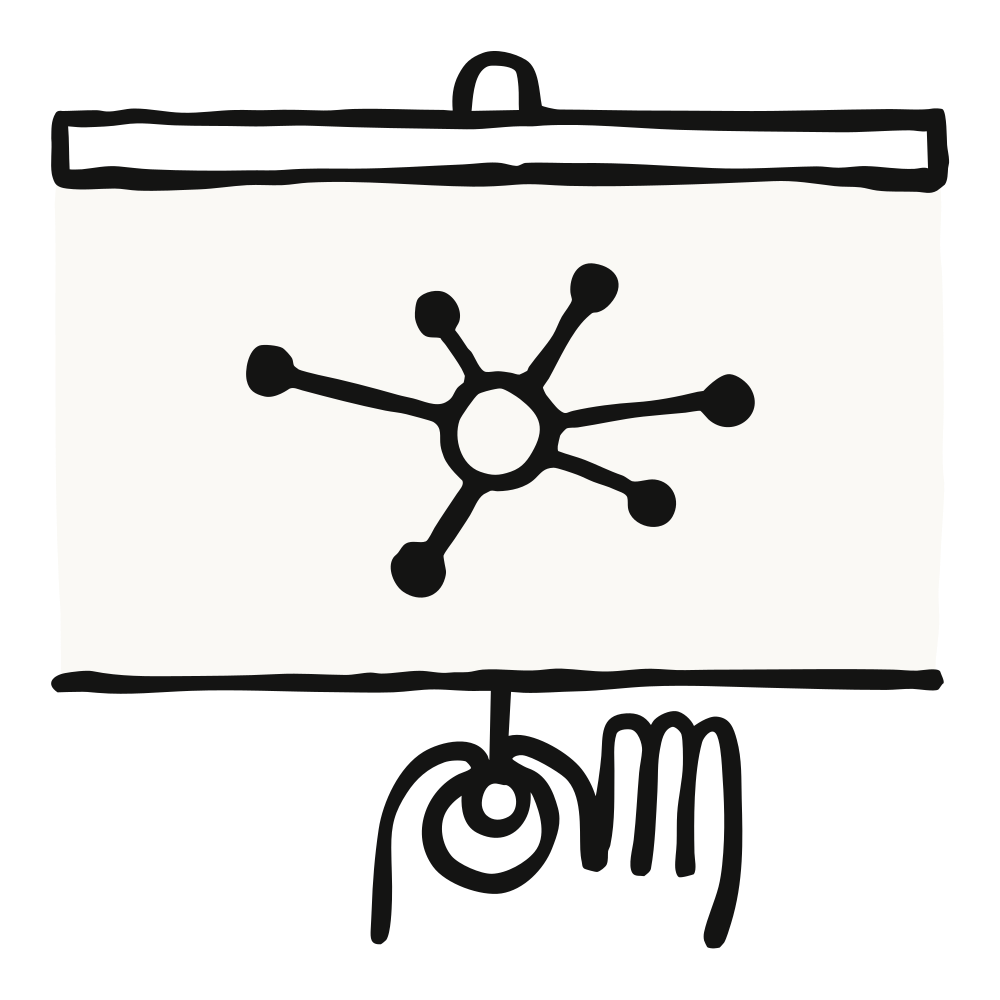

2025年7月25日 ● 26分钟阅读
[]
Anthropic的内部团队正在通过Claude Code转变他们的工作流程，使开发人员和非技术员工能够处理复杂项目、自动化任务，并弥合以前限制他们生产力的技能差距。
为了了解更多信息，我们采访了以下团队：
通过这些采访，我们收集了关于不同部门如何使用Claude Code的见解、它对他们工作的影响，以及为考虑采用该工具的其他组织提供的建议。
数据基础设施团队为公司各个团队组织所有业务数据。他们使用Claude Code来自动化日常数据工程任务、排查复杂的基础设施问题，并创建文档化的工作流程，使技术和非技术团队成员能够独立访问和操作数据。
当Kubernetes集群宕机且无法调度新的pod时，团队使用Claude Code来诊断问题。他们将仪表板的截图输入Claude Code，Claude Code逐菜单指导他们通过Google Cloud的UI界面，直到找到显示pod IP地址耗尽的警告。然后Claude Code提供了创建新IP池并将其添加到集群的确切命令，无需涉及网络专家。
工程师向财务团队成员展示如何编写描述其数据工作流程的纯文本文件，然后将它们加载到Claude Code中以获得完全自动化的执行。没有编程经验的员工可以描述”查询此仪表板，获取信息，运行这些查询，生成Excel输出”等步骤，Claude Code会执行整个工作流程，包括询问所需的输入（如日期）。
当新的数据科学家加入团队时，他们被指导使用Claude Code来导航庞大的代码库。Claude Code会读取他们的Claude.md文件（文档），识别特定任务的相关文件，解释数据管道依赖关系，并帮助新人理解哪些上游源数据输入到仪表板中。这取代了传统的数据目录和可发现性工具。
团队要求Claude Code在每个任务结束时总结已完成的工作会话并提出改进建议。这创建了一个持续改进循环，Claude Code帮助基于实际使用情况改进Claude.md文档和工作流程说明，使后续迭代更加有效。
在处理长时间运行的数据任务时，团队在不同项目的不同存储库中打开多个Claude Code实例。每个实例都保持完整的上下文，因此当他们在数小时或数天后切换回来时，Claude Code会准确记住他们在做什么以及停在哪里，实现真正的并行工作流程管理而不丢失上下文。
解决通常需要系统或网络团队成员参与的Kubernetes集群问题，使用Claude Code诊断问题并提供确切的解决方案。
新的数据分析师和团队成员可以快速理解复杂系统，并在无需大量指导的情况下做出有意义的贡献。
Claude Code可以处理更大的数据量并识别异常（如监控200个仪表板），这是人类无法手动审查的。
没有编程经验的财务团队现在可以独立执行复杂的数据工作流程。
据团队表示，在Claude.md文件中越好地记录您的工作流程、工具和期望，Claude Code的表现就越好。这使得Claude Code在有现有设计模式时，能够在设置新数据管道等日常任务中表现出色。
他们建议使用MCP服务器而不是BigQuery CLI来更好地控制Claude Code可以访问的内容的安全性，特别是在处理需要记录或有潜在隐私问题的敏感数据时。
团队举办了成员互相演示Claude Code工作流程的会话。这有助于传播最佳实践，并展示他们可能没有自己发现的使用工具的不同方法。
Claude Code产品开发团队使用他们自己的产品来构建Claude Code的更新，扩展产品的企业功能和智能循环功能。
工程师们通过启用”自动接受模式”(shift+tab)并设置自主循环来使用Claude Code进行快速原型开发，在该循环中Claude编写代码、运行测试并持续迭代。他们给Claude一些不熟悉的抽象问题，让它自主工作，然后在接手进行最终完善之前审查80%完成的解决方案。团队建议从干净的git状态开始，定期提交检查点，这样如果Claude偏离轨道，他们可以轻松回滚任何错误的更改。
对于涉及应用程序业务逻辑的更关键功能，团队与Claude Code同步工作，提供包含具体实现指令的详细提示。他们实时监控过程以确保代码质量、风格指南合规性和正确的架构，同时让Claude处理重复性的编码工作。
他们最成功的异步项目之一是为Claude Code实现Vim键位绑定。他们要求Claude构建整个功能，最终实现中大约70%来自Claude的自主工作，只需要几次迭代就能完成。
团队使用Claude Code在实现功能后编写全面的测试，并处理在拉取请求审查中发现的简单bug修复。他们还使用GitHub Actions让Claude自动处理拉取请求评论，如格式问题或函数重命名。
当处理不熟悉的代码库时(如monorepo或API端)，团队使用Claude Code快速了解系统的工作原理。他们直接向Claude询问解释和代码引用，而不是等待Slack回复，在上下文切换中节省了大量时间。
Claude Code成功实现了复杂功能，如Vim模式，其中70%的代码由Claude自主编写。
该工具快速原型化功能并迭代想法，不会陷入实现细节的困扰。
Claude生成全面的测试并处理常规bug修复，在减少手动工作的同时保持高标准。
团队成员快速掌握monorepo的不熟悉部分，无需等待同事回复。
设置Claude通过自动运行构建、测试和检查来验证自己的工作。这允许Claude更长时间地自主工作并发现自己的错误，特别是当你要求Claude在编写代码之前生成测试时效果显著。
学会区分适合异步工作的任务(外围功能、原型开发)与需要同步监督的任务(核心业务逻辑、关键修复)。产品边缘的抽象任务可以用”自动接受模式”处理，而核心功能需要更密切的监督。
当组件有相似的名称或功能时，在请求中要极其具体。你的提示越好、越详细，你就越能信任Claude独立工作，而不会对代码库的错误部分进行意外更改。
安全工程团队专注于保护软件开发生命周期、供应链安全和开发环境安全。他们广泛使用Claude Code来编写和调试代码。
在处理事件时，他们向Claude Code提供堆栈跟踪和文档，要求它追踪代码库中的控制流。这显著减少了生产问题的解决时间，让他们能够在大约5分钟内理解通常需要10-15分钟手动代码扫描才能解决的问题。
对于需要安全批准的基础设施更改，团队将Terraform计划复制到Claude Code中询问”这将做什么？我会后悔吗？“这创建了更紧密的反馈循环，使安全团队更容易快速审查和批准基础设施更改，减少开发过程中的瓶颈。
Claude Code摄取多个文档源并创建markdown运行手册、故障排除指南和概述。团队使用这些精简文档作为调试实际问题的上下文，创建比搜索完整知识库更高效的工作流程。
他们现在要求Claude Code提供伪代码，引导它进行测试驱动开发，并定期检查以在卡住时引导它，从而产生更可靠和可测试的代码，而不是之前的”设计文档→粗糙代码→重构→放弃测试”模式。
当为现有项目如”dependant”(安全批准工作流的web应用程序)做贡献时，他们使用Claude Code编写、审查和执行存储在代码库中的markdown规范，在几天内而不是几周内实现有意义的贡献。
通常需要10-15分钟手动代码扫描的基础设施调试现在大约需要5分钟。
安全批准的Terraform代码审查速度大大提升，消除了开发人员等待安全团队批准时的阻塞。
团队成员可以在数天内而非数周的背景构建后，对项目做出有意义的贡献。
更好的文档工作流程
从多个来源合成的故障排除指南和操作手册创建了更高效的调试流程。
广泛使用自定义斜杠命令
安全工程团队使用了整个单体仓库中50%的自定义斜杠命令实现。这些自定义命令简化了特定的工作流程并加速了重复任务。
让Claude先说话
他们现在不再询问有针对性的问题来生成代码片段，而是告诉Claude Code”边工作边提交”，让它自主工作并定期检查，从而产生更全面的解决方案。
利用它来处理文档
除了编码，Claude Code在合成文档和创建结构化输出方面表现出色。团队提供写作样本和格式偏好，以获得可以立即在Slack、Google Docs和其他工具中使用的文档，避免界面切换疲劳。
推理团队管理内存系统，该系统在Claude阅读您的提示并生成响应时存储信息。团队成员，特别是那些机器学习新手，可以广泛使用Claude Code来弥合知识差距并加速他们的工作。
代码库理解和入职培训
团队在加入复杂代码库时，严重依赖Claude Code来快速理解架构。他们不再手动搜索GitHub仓库，而是询问Claude查找调用特定功能的文件，在几秒钟内获得结果，而不是询问同事或手动搜索。
具有边缘情况覆盖的单元测试生成
在编写核心功能后，他们让Claude编写全面的单元测试。Claude自动包含遗漏的边缘情况，在几分钟内完成通常需要大量时间和精神能量的工作，就像一个可以审查的编码助手。
机器学习概念解释
没有机器学习背景的团队成员依靠Claude来解释模型特定的函数和设置。原本需要一小时的Google搜索和阅读文档的工作现在只需10-20分钟，研究时间减少了80%。
跨语言代码翻译
在不同编程语言中测试功能时，团队解释他们想要测试什么，Claude用所需的语言（如Rust）编写逻辑，消除了仅为测试目的而学习新语言的需要。
命令回忆和Kubernetes管理
他们不再记忆复杂的Kubernetes命令，而是向Claude询问正确的语法，比如”如何获取所有pod或部署状态”，并接收基础设施工作所需的确切命令。
加速ML概念学习
使用Claude Code，他们的研究时间减少了80%，历史上需要一小时Google搜索的工作现在只需10-20分钟。
更快的代码库导航
该工具可以帮助团队成员在几秒钟内找到相关文件并理解系统架构，而不是依赖同事分享知识，这通常需要几天时间。
全面的测试覆盖
Claude自动生成带有边缘情况的单元测试，在保持代码质量的同时减轻心理负担。
消除语言障碍
团队可以在不熟悉的语言（如Rust）中实现功能，而无需学习它。
首先测试知识库功能
尝试提出各种问题，看看Claude是否能比Google搜索更快地回答。如果更快更准确，它就是您工作流程中一个有价值的节省时间的工具。
从代码生成开始
给Claude具体指令并让它编写逻辑，然后验证正确性。这有助于在将其用于更复杂任务之前建立对工具能力的信任。
用它来编写测试
让Claude编写单元测试可以大大减轻日常开发工作的压力。使用此功能来维护代码质量，而无需花时间手动思考所有测试用例。
数据科学和ML工程团队需要复杂的可视化工具来理解模型性能，但构建这些工具通常需要不熟悉的语言和框架的专业知识。Claude Code使这些团队能够构建生产质量的分析仪表板，而无需成为全栈开发人员。
构建JavaScript/TypeScript仪表板应用
尽管”对JavaScript和TypeScript了解很少”，团队使用Claude Code构建完整的React应用程序来可视化强化学习(RL)模型性能和训练数据。他们让Claude控制从头编写完整的应用程序，比如一个5000行的TypeScript应用，而无需自己理解代码。这很关键，因为可视化应用相对低上下文，不需要理解整个单体仓库，允许快速原型化工具来理解训练和评估期间的模型性能。
处理重复的重构任务
当面临合并冲突或半复杂的文件重构时，这些任务对于编辑器宏来说太复杂，但对于主要开发工作来说又不够大，他们像使用”老虎机”一样使用Claude Code——提交他们的状态，让Claude自主工作30分钟，要么接受解决方案，要么如果不起作用就重新开始。
团队现在让Claude构建永久性的React仪表板，而不是构建一次性的Jupyter笔记本然后丢弃，这些仪表板可以在未来的模型评估中重复使用。这很重要，因为理解Claude的性能”是团队最重要的事情之一” - 他们需要了解模型在训练和评估过程中的表现，这”实际上并非易事，简单的工具无法从查看单个数字的上升中获得太多信号。”
对于完全陌生的代码库或语言中的任务，他们将整个实现委托给Claude Code，利用其从monorepo收集上下文并在他们不参与实际编码过程的情况下执行任务的能力。这使得他们能够在自己专业领域之外保持生产力，而不是花时间学习新技术。
以前繁琐但可以手动管理的常规重构任务现在完成得更快。
尽管JavaScript/TypeScript经验很少，但创建了5000行的TypeScript应用程序。
不再使用一次性的Jupyter笔记本，现在为模型分析构建可重复使用的React仪表板。
第一手的Claude Code体验为未来模型迭代中更好的内存系统和用户体验改进的开发提供信息。
通过先进的数据可视化工具更好地理解Claude在训练和评估过程中的性能。
在让Claude工作之前保存你的状态，让它运行30分钟，然后要么接受结果，要么重新开始，而不是试图纠正错误。重新开始通常比试图修复Claude的错误有更高的成功率。
在监督时，不要犹豫停止Claude并询问”你为什么这样做？试试更简单的方法。“模型默认倾向于更复杂的解决方案，但对简化方法的请求反应良好。
产品工程团队致力于PDF支持、引用和网络搜索等功能，这些功能将额外知识引入Claude的上下文窗口。在大型复杂代码库中工作意味着不断遇到陌生的代码部分，花费大量时间了解对于任何给定任务应该检查哪些文件，并在进行更改之前构建上下文。Claude Code通过充当可以帮助他们理解系统架构、识别相关文件和解释复杂交互的指南来改善这种体验。
团队将Claude Code用作任何任务的”第一站”，要求它识别用于错误修复、功能开发或分析的文件。这取代了传统的手动导航代码库并在开始工作前收集上下文的耗时过程。
团队现在有信心处理代码库陌生部分的错误，而不是向他人寻求帮助。他们可以问Claude”你认为你能修复这个错误吗？这是我看到的行为”并经常立即取得进展，这在以前由于所需的时间投资是不可行的。
Claude Code自动使用最新的研究模型快照，使其成为他们体验模型变化的主要方式。这为团队在开发周期中提供关于模型行为变化的直接反馈，这是他们在以前的发布中没有经历过的。
他们可以直接在Claude Code中提问，而不是复制代码片段并将文件拖入Claude.ai同时广泛解释问题，无需额外的上下文收集，显著减少了心理开销。
团队成员可以独立调试错误并调查陌生代码库中的事件。
Claude Code消除了复制代码片段和将文件拖入Claude.ai的开销，减少了心理上下文切换负担。
轮换到新团队的工程师可以快速导航陌生的代码库并有意义地贡献，而无需广泛的同事咨询。
团队报告称，由于日常工作流程摩擦的减少，他们感到更快乐、更高效。
不要期望Claude立即解决问题，而是将其作为你迭代合作的协作者。这比试图在第一次尝试时获得完美解决方案效果更好。
不要犹豫处理你专业领域之外的错误或调查事件。Claude Code使得在通常需要大量上下文构建的领域独立工作变得可行。
从你需要的最基本信息开始，让Claude引导你完成过程，而不是预先加载大量解释。
Growth Marketing团队专注于构建跨付费搜索、付费社交、移动应用商店、邮件营销和SEO的效果营销渠道。作为一个只有一人的非技术团队，他们使用Claude Code来自动化重复的营销任务，并创建传统上需要大量工程资源的智能工作流。
自动化Google Ads创意生成
团队构建了一个智能工作流，处理包含数百个现有广告及其效果指标的CSV文件，识别表现不佳的广告进行迭代，并生成符合严格字符限制的新变体（标题30字符，描述90字符）。使用两个专门的子代理（一个负责标题，一个负责描述），系统可以在几分钟内生成数百个新广告，而不需要跨多个营销活动手动创建。这使他们能够大规模测试和迭代，这在以前需要花费大量时间才能实现。
大规模创意制作的Figma插件
他们开发了一个Figma插件，而不是手动复制和编辑付费社交广告的静态图片，该插件可以识别框架并通过交换标题和描述以编程方式生成多达100个广告变体，将原本需要数小时复制粘贴的工作减少到每批半秒。这使创意输出提高了10倍，让团队能够在关键社交渠道上测试更多的创意变体。
用于营销活动分析的Meta Ads MCP服务器
他们创建了一个与Meta Ads API集成的MCP服务器，可以在Claude Desktop应用中直接查询营销活动效果、支出数据和广告效果，无需在平台之间切换进行效果分析，节省了关键时间，每一个效率提升都转化为更好的ROI。
具有记忆系统的高级提示工程
他们实现了一个基础记忆系统，记录广告迭代中的假设和实验，允许系统在生成新变体时将以前的测试结果引入上下文，创建了一个自我改进的测试框架。这实现了手动跟踪无法实现的系统化实验。
重复任务的显著时间节省
Claude Code将广告文案创建时间从2小时减少到15分钟，释放团队进行更多战略性工作。
创意输出提高10倍
团队现在可以通过自动化广告生成和Figma集成来测试更多跨渠道的广告变体，以获取最新的视觉设计元素。
像更大团队一样运作
团队可以处理传统上需要专门工程资源的大型开发任务。
战略重点转移
团队可以将更多时间花在整体战略和构建智能自动化上，而不是手动执行。
识别API支持的重复任务
寻找涉及使用具有API的工具（如广告平台、设计工具、分析平台）进行重复操作的工作流。这些是自动化的主要候选者，也是Claude Code提供最大价值的地方。
将复杂工作流分解为专门的子代理
不要试图在一个提示或工作流中处理所有事情，而是为特定任务创建单独的代理（如标题代理与描述代理）。这使调试更容易，并在处理复杂需求时提高输出质量。
在编码前彻底头脑风暴和提示规划
在前期花费大量时间使用Claude.ai思考整个工作流，然后让Claude.ai为Claude Code创建一个全面的提示和代码结构以供参考。此外，要逐步工作，而不是要求一次性解决方案，以避免Claude被复杂任务压倒。
产品设计团队支持Claude Code、Claude.ai和Anthropic API，专门构建AI产品。即使是非开发人员也可以使用Claude Code来弥合设计和工程之间的传统差距，使他们能够直接实现设计愿景，而无需与工程师进行大量来回迭代。
前端润色和状态管理更改
团队不再创建详尽的设计文档并与工程师就视觉调整（字体、颜色、间距）进行多轮反馈，而是直接使用Claude Code实现这些更改。工程师注意到他们正在进行”通常不会看到设计师进行的大型状态管理更改”，使他们能够实现想象中的确切质量。
GitHub Actions自动化工单
使用Claude Code的GitHub集成，他们只需提交描述所需更改的问题/工单，Claude会自动提出代码解决方案，无需打开Claude Code，为他们持续的润色任务积压创建了无缝的错误修复和功能完善工作流。
快速交互式原型制作
通过将模拟图片粘贴到Claude Code中，他们生成工程师可以立即理解和迭代的完全功能原型，取代了需要大量解释和转换为工作代码的传统静态Figma设计循环。
边缘情况发现和系统架构理解
团队使用Claude Code来映射错误状态、逻辑流程和不同系统状态，使他们能够在设计阶段识别边缘情况，而不是在开发后期发现，从根本上提高了初始设计的质量。
复杂文案更改和法律合规
对于在整个代码库中删除”研究预览”消息等任务，他们使用Claude Code查找所有实例，审查周围的文案，与法务团队实时协调更改，并实施更新，这个过程只需要两次30分钟的通话，而不是一周的来回协调。
Claude Code成为主要的设计工具，80%的时间都同时打开Figma和Claude Code。
之前需要与工程师进行大量来回沟通的视觉和状态管理更改，现在可以直接实施。
像Google Analytics发布消息这样的复杂项目，之前需要一周的协调时间，现在只需两次30分钟的通话就能完成。
开发者获得”增强工作流程”（更快的执行），而非技术用户获得”天哪，我是开发者的工作流程”。
Claude Code能够改善沟通并加快问题解决，因为设计师能够理解系统约束和可能性，而无需与工程师密切合作。
让工程团队同事帮助进行初始存储库设置和权限配置 - 对于非开发者来说，技术入门具有挑战性，但一旦配置完成，它就会改变日常工作流程。
创建具体的指示，告诉Claude你是一个编码经验很少的设计师，需要详细的解释和更小的增量更改，这会显著改善Claude响应的质量，使其不那么令人生畏。
使用Command+V将截图直接粘贴到Claude Code中。它擅长读取设计并生成功能代码，这对于将静态模型转换为工程师可以立即理解和构建的交互式原型非常有价值。
RL工程团队专注于RL中的高效采样和跨集群的权重传输。他们主要使用Claude Code编写小到中等规模的功能、调试和理解复杂的代码库，采用包括频繁检查点和回滚的迭代方法。
团队让Claude Code为小到中等规模的功能编写大部分代码，同时提供监督，例如为权重传输组件实施身份验证机制。他们以交互方式工作，允许Claude带头，但在它偏离轨道时进行引导。
在自己实施更改后，团队要求Claude Code添加测试或审查他们的代码。这种自动化测试工作流程在日常但重要的质量保证任务上节省了大量时间。
他们使用Claude Code调试错误，结果好坏参半。有时它会立即识别问题并添加相关测试，有时则难以理解问题，但总体上在有效时提供价值。
他们工作流程中的最大变化之一是使用Claude Code快速获取相关组件和调用栈的摘要，取代了手动代码阅读或生成大量调试输出。
他们经常询问Claude Code关于Kubernetes操作的问题，这些问题否则需要大量的Google搜索或询问基础设施工程团队的同事，可以立即获得配置和部署问题的答案。
他们现在使用”尝试和回滚”方法，频繁提交检查点，这样他们可以测试Claude的自主实施尝试，如果需要可以恢复，从而实现更多实验性。
Claude Code自动添加有用的注释，在文档编写上节省大量时间，尽管他们注意到它有时会在奇怪的地方添加注释或使用有问题的代码组织。
虽然Claude Code可以用他们”相对较少的时间”实施小到中等规模的PR，但他们承认它在第一次尝试时只有大约三分之一的时间有效，需要额外的指导或手动干预。
在你的Claude.md文件中添加指示，防止Claude犯重复的工具调用错误，例如告诉它”运行pytest而不是run，不要不必要地cd - 只使用正确的路径”。这显著改善了输出的一致性。
在Claude进行更改时定期提交你的工作，这样当实验不成功时你可以轻松回滚。这使得能够采用更实验性的开发方法而不会有风险。
给Claude一个快速提示，让它首先尝试完整的实施。如果有效（大约三分之一的时间），你就节省了大量时间。如果无效，则切换到更协作、有指导的方法。
法务团队通过实验和学习Anthropic产品offerings的愿望发现了Claude Code的潜力。此外，一位团队成员有一个与为家庭创建无障碍工具和展示技术对非开发者威力的工作原型相关的个人用例。
为家庭成员定制的无障碍解决方案
团队成员为因医疗诊断而有语言障碍的家庭成员构建了沟通辅助工具。一个人仅用一小时就创建了一个预测文本应用，使用原生语音转文本功能来建议回复并通过语音库朗读，解决了语言治疗师推荐的现有无障碍工具中的空白。
法律部门工作流程自动化
团队创建了原型”电话树”系统，帮助团队成员与Anthropic的合适律师建立联系，展示了法律部门如何在没有传统开发资源的情况下为常见任务构建定制工具。
团队协调工具
管理者构建了G Suite应用，自动化每周团队更新并跟踪各产品的法律审查状态，让律师能够通过简单的按钮点击快速标记需要审查的项目，而不是管理电子表格。
用于解决方案验证的快速原型制作
他们使用Claude Code快速构建功能原型，可以向领域专家展示（如向UCSF专家展示无障碍工具），以验证想法并在投入更多时间之前识别现有解决方案。
在Claude.ai中规划，在Claude Code中构建
他们使用两步流程，首先在Claude.ai中头脑风暴和规划，然后转到Claude Code进行实施，要求它放慢节奏并逐步工作，而不是一次性输出所有内容。
视觉优先的方法
他们经常使用屏幕截图向Claude Code展示他们希望界面的样子，然后基于视觉反馈进行迭代，而不是用文字描述功能。
原型驱动的创新
他们强调要克服分享”愚蠢”或”玩具”原型的恐惧，因为这些演示能激发他人看到他们之前没有考虑过的可能性。
MCP集成关注点
产品律师使用Claude Code立即识别深度MCP集成的安全影响，注意到当AI工具访问更多敏感系统时，保守的安全态势将创造障碍。
合规工具优先级
他们主张随着AI能力的扩展快速构建合规工具，认识到创新与风险管理之间的平衡。
首先在Claude.ai中进行广泛规划
使用Claude的对话界面充分完善你的整个想法，然后再转到Claude Code。然后要求Claude将所有内容总结成实施的逐步提示。
增量式和视觉化工作
要求Claude Code放慢节奏并一次实施一个步骤，这样你就可以复制粘贴而不会感到overwhelmed(不知所措)。大量使用屏幕截图来展示你希望界面的样子。
尽管不完美也要分享原型
克服隐藏”玩具”项目或未完成工作的冲动。分享原型帮助他人看到可能性，并在通常不互动的部门间激发创新。